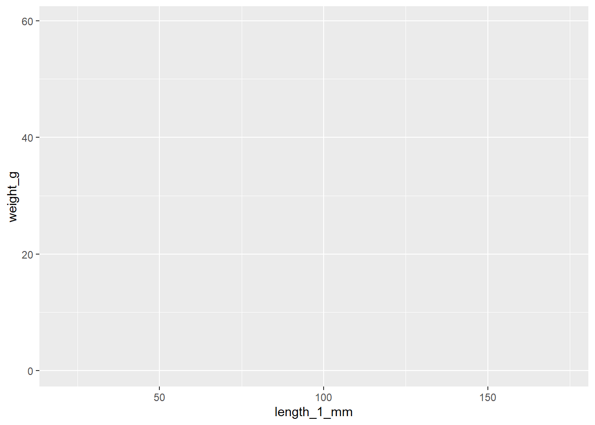
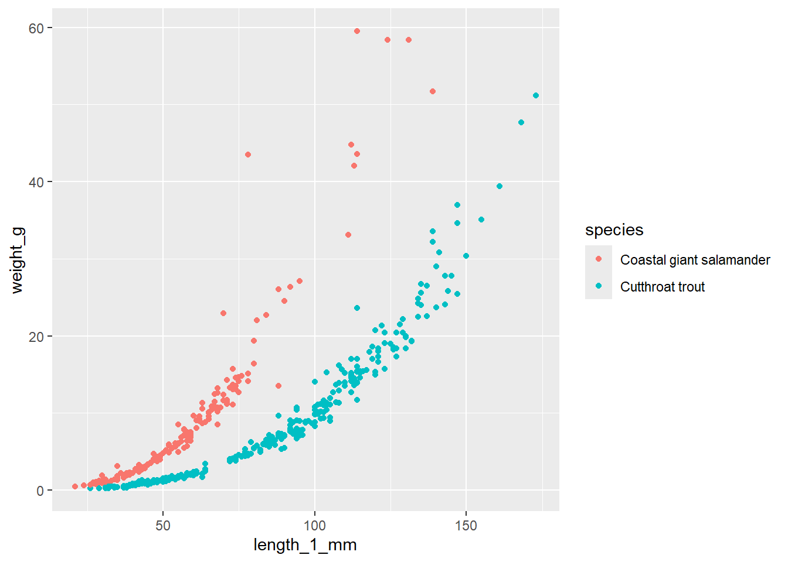
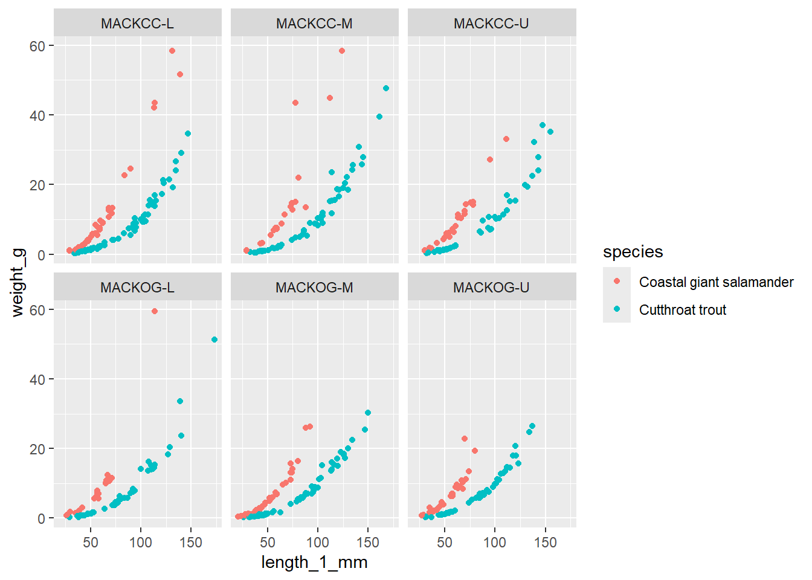
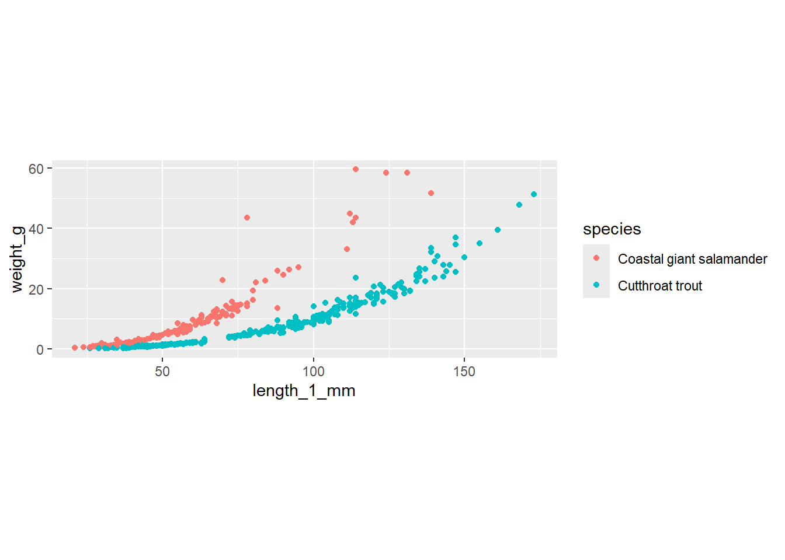
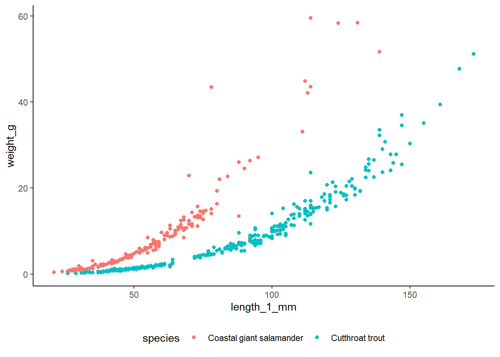
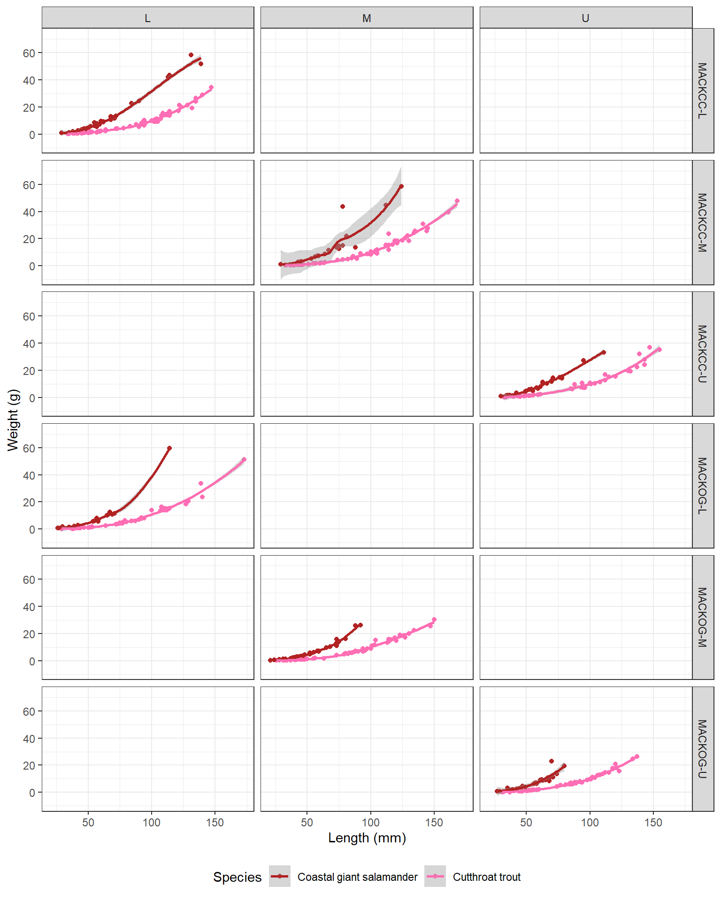
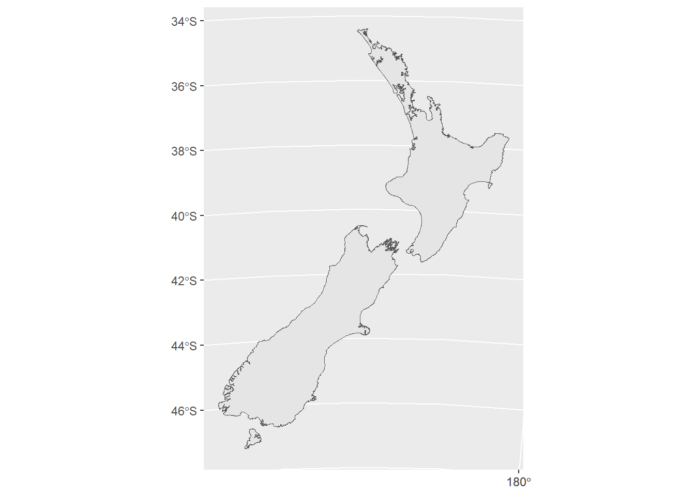
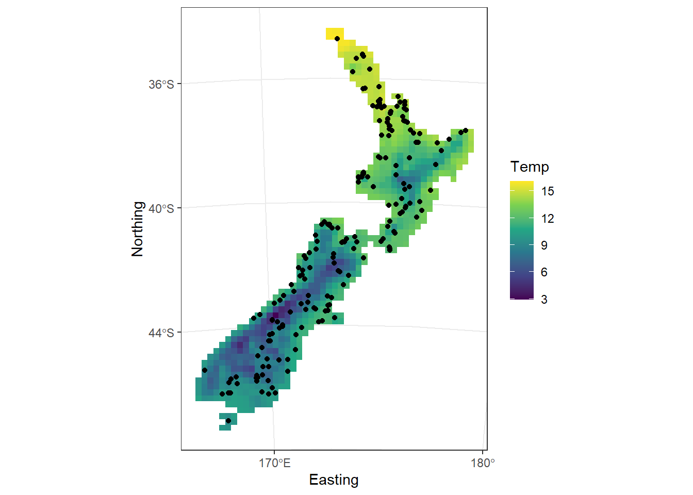
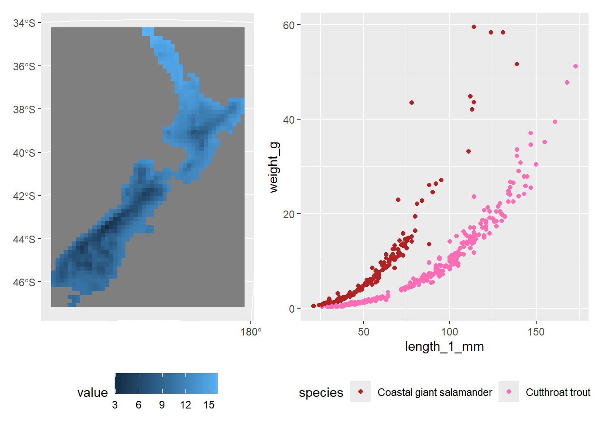
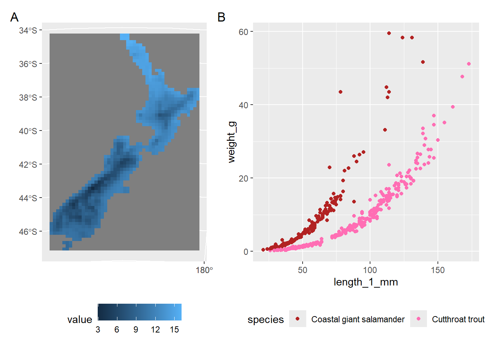

install.packages(c("tidyverse", "patchwork", "terra",
"tidyterra", "sf", "lterdatasampler",
"nzffdr", "geodata"))Introduction to ggplot
OVERVIEW
Quick introduction to creating figures using ggplot2. This session is only meant to give a quick overview of some of the basic tools to get up and running. The session will be broken down into three main components:
Fundamentals of
ggplot2ggplot2and spatial dataCombining plots with
patchwork
Helpful resources:
SETUP
Install packages
Load packages
library(tidyverse) # data wrangling + ggplot2
library(patchwork) # combining plots
library(terra) # raster data
library(tidyterra) # plotting raster data
library(sf) # spatial data
library(lterdatasampler) # toy dataset
library(nzffdr) # toy data
library(geodata) # download environmental data1 ggplot2 FUNDAMENTALS
ggplot2 makes it simple to quickly plot data in a virtually unlimited number of ways, with huge amounts of customisation possible. There are 7 core components of a ggplot (not all are required to produce a plot).
- data
- mapping
- layers
- scales
- facets
- coordinates
- themes
Data
Self explanatory. We need some data we want to plot. Get some toy data:
# sample of trout and salamander data from US
toy_df <- and_vertebrates %>%
select(year, sitecode, reach, pass, species,length_1_mm, weight_g) %>%
na.omit() %>%
sample_n(500)
head(toy_df)# A tibble: 6 × 7
year sitecode reach pass species length_1_mm weight_g
<dbl> <chr> <chr> <dbl> <chr> <dbl> <dbl>
1 1992 MACKCC-L L 1 Cutthroat trout 50 1.35
2 2018 MACKCC-M M 2 Coastal giant salamander 56 6.8
3 1996 MACKOG-M M 1 Cutthroat trout 44 0.85
4 2016 MACKCC-U U 2 Coastal giant salamander 66 10.4
5 2011 MACKCC-L L 1 Coastal giant salamander 70 12.4
6 2010 MACKOG-M M 2 Cutthroat trout 73 4.08The first step is to pass our data to ggplot() - this will not produce any output.
# pass data to ggplot
ggplot(data = toy_df)Mapping
Next we want to instruct which columns within the dataset will be used fro what (e.g. explanatory and response variables, groups to colour by etc.). This is achieved via the aesthetics (aes()) function.
# pass data to ggplot
ggplot(data = toy_df, mapping = aes(x = length_1_mm,
y = weight_g,
colour = species))
Layers
This is where we say what sort of plot we want, e.g. scatter plot, bar graph etc.There are a vast array of possible options. Typically we’ll use a function starting with geom_.
# create scatter plot
ggplot(data = toy_df, mapping = aes(x = length_1_mm,
y = weight_g,
colour = species)) +
geom_point()
Scales
Scales give us finer control over aesthetics such as colour, fill, opacity, size, shape, line type. There are specific functions for each, and then depending on if you have continuous or discrete data, there are different versions of the functions.
In our example, we have coloured points by species, so a discrete variable. We can use scale_colour_manual() to manually alter the colours, or we can use similar functions with built-in colour palettes to automatically set colours.
# create a plot
toy_plot <- ggplot(data = toy_df, mapping = aes(x = length_1_mm,
y = weight_g,
colour = species)) +
geom_point()
# manually select the colours
toy_plot +
scale_colour_manual(values = c("firebrick", "hotpink1"))
# use colour brewer
toy_plot +
scale_colour_brewer(palette = "Set1")# use viridis
toy_plot +
scale_colour_viridis_d()We could similarly alter things like point size, shape, opacity etc.
Facets
Facets are used to create separate plots, based on a column in your dataset. For example, by site, year or species. We can use fact_wrap() if we want to create multiple plots based on factors in 1 column, or facet_grid() if we want to create multiple plots based on factors in 2 columns.
# facet by site
toy_plot +
facet_wrap(~sitecode)
# facet by site * reach
toy_plot +
facet_grid(sitecode~reach)Coordinates
Can be used to fix aspect ratios. These functions are most useful when creating maps or for figures that need fixed aspect ratios such as ordinations.
# fix coordinates
toy_plot +
coord_fixed()
Themes
Themes are used to customise how a plot looks. for example, background colour or grid lines, legend position, axis tick marks etc.There are built in themes, or individual aspects can be manually adjusted.
# use a built in theme
toy_plot +
theme_classic()# use a built in theme + manually shift the legend
toy_plot +
theme_classic() +
theme(legend.position = "bottom")
Extras
There is much more functionality than what we have covered, for example overwriting labels and automatically fitting regression lines to plots.
# add a regression line
toy_plot +
geom_smooth()# tidy labels
toy_plot +
labs(x = "Length (mm)",
y = "Weight (g)",
colour = "Species")Pretty much any plot type or adjustment you can think of will be possible.
Bring it all together
The power of ggplot is the ability to layer the pieces together.
# combine
toy_plot +
scale_colour_manual(values = c("firebrick", "hotpink1")) +
geom_smooth() +
facet_grid(sitecode~reach) +
labs(x = "Length (mm)",
y = "Weight (g)",
colour = "Species") +
theme_bw() +
theme(legend.position = "bottom")
2 ggplot2 + SPATIAL DATA
ggplot2 can be used for creating maps and plotting spatial data such as point locations, polygons and rasters.Start by getting some toy spatial data.
Map of NZ (polygons)
nz_map <- nzffdr::nzffdr_nzmap
# drop Chatham Islands
nz_map <- nz_map %>%
filter(name != "Chatham Island")Location data of NZFFD sampling events
toy_df2 <- nzffdr::nzffdr_data %>%
select(nzffdRecordNumber, eventDate, eastingNZTM, northingNZTM, taxonCommonName ) %>%
na.omit()
head(toy_df2) nzffdRecordNumber eventDate eastingNZTM northingNZTM taxonCommonName
1 29241 2008-02-04 1634529 5438714 Brown trout
2 21330 2005-11-30 1368530 5146277 Upland bully
3 11147 1992-04-10 1587712 5372320 Brown trout
4 22087 2003-02-21 1603513 5476381 Shortfin eel
5 21634 2002-05-01 1753301 5925468 Koura
6 26752 2006-03-09 1358166 5071561 Bignose galaxiasplot map with NZFFD sample locations
# plot nz outline
ggplot() +
geom_sf(data = nz_map)
# Add points
ggplot() +
geom_sf(data = nz_map) +
geom_point(data = toy_df2, aes(x = eastingNZTM,
y = northingNZTM))# tidy a little
ggplot() +
geom_sf(data = nz_map,
fill = "lightgrey",
colour = NA) +
geom_point(data = toy_df2, aes(x = eastingNZTM,
y = northingNZTM),
alpha = 0.5) +
scale_x_continuous(breaks = c(170, 180)) +
scale_y_continuous(breaks = c(-48, -44, -40, -36)) +
labs(x = "Easting",
y = "Northing") +
theme_bw()We can also plot raster data in ggplot. First we download some global environmental data, then crop in to NZ and plot.
# get global env data raster
clim <- geodata::worldclim_global(var = 'bio',
res = 10,
path=tempdir())
# pull mean temp
clim_temp <- clim[[1]]
# plot
ggplot() +
geom_spatraster(data = clim_temp) Extract just NZ and plot
# reproject to NZTM
temp_nztm <- terra::project(clim_temp, terra::crs(nz_map))
# crop NZ
temp_nztm <- terra::crop(temp_nztm, nz_map, mask = T)
# plot NZ with points + tidy
ggplot() +
geom_spatraster(data = temp_nztm, ) +
scale_fill_viridis_c(na.value = NA) +
geom_point(data = toy_df2, aes(x = eastingNZTM,
y = northingNZTM)) +
scale_x_continuous(breaks = c(170, 180)) +
scale_y_continuous(breaks = c(-48, -44, -40, -36)) +
labs(x = "Easting",
y = "Northing",
fill = "Temp") +
theme_bw()
3 COMBINING PLOTS
Sometimes we may want to combine miultple plots, The patchwork package is perfect for this.
Create a few different plots
p1 <- ggplot() +
geom_spatraster(data = temp_nztm)
p2 <- toy_plot +
scale_colour_manual(values = c("firebrick", "hotpink1"))Combine plots
p1 + p2Shift legends
p1 + p2 & theme(legend.position = 'bottom')
Tag plots
p1 + p2 + plot_annotation(tag_levels = 'A') & theme(legend.position = 'bottom') 